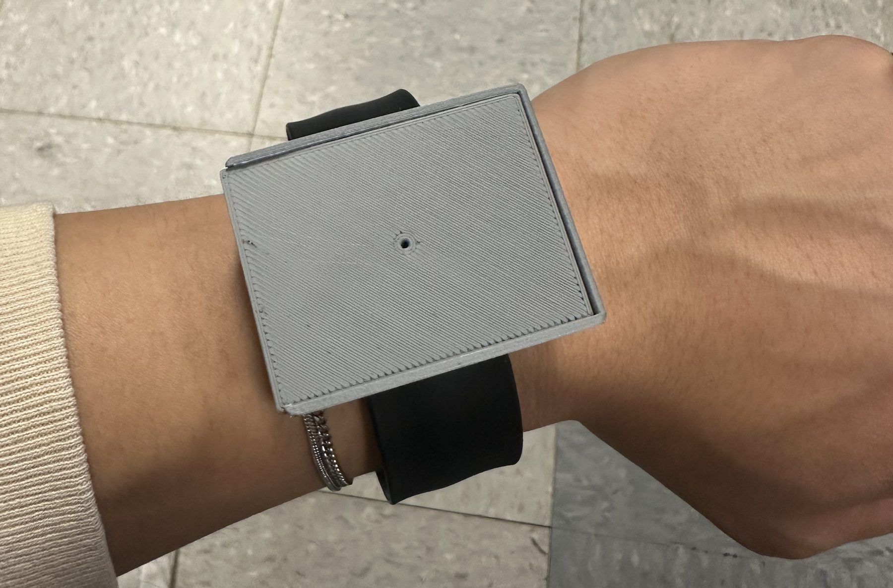
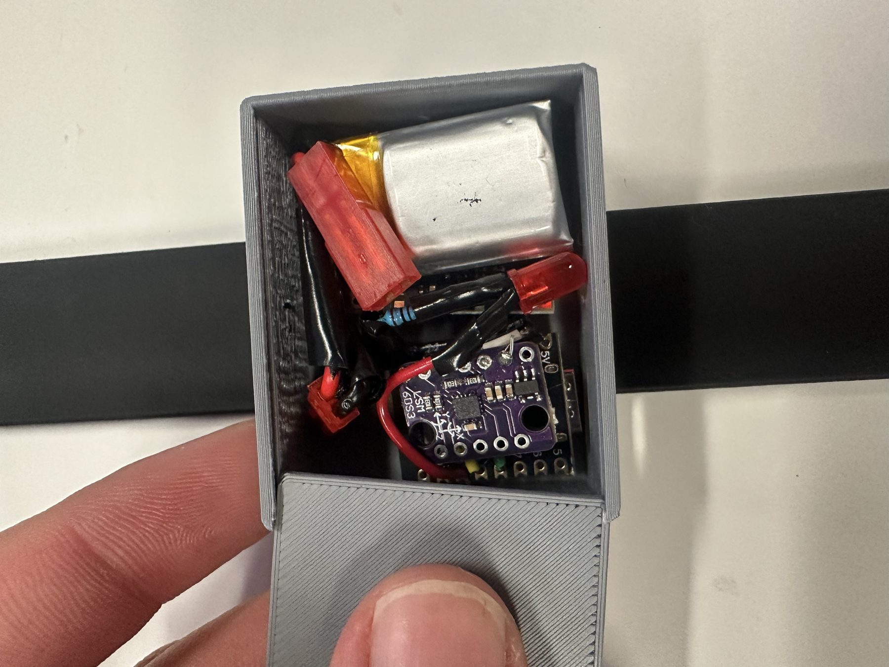
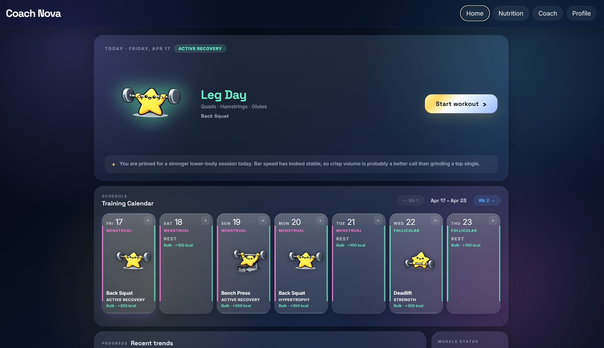

01Overview
Coach NOVA was developed as an assistive coaching platform for strength athletes who train without direct access to a coach. The system captures motion data during lifts and translates it into feedback that can support immediate adjustments during training as well as longer-term performance analysis after a session is completed.
02Purpose
The goal of Coach NOVA is to replace the broken feedback loop in strength training by providing continuous, personalized coaching. In many training environments, athletes either receive delayed feedback or no feedback at all. This system addresses that gap by collecting movement data in real time and converting it into clear, useful guidance.
03Target users
- Competitive and semi-competitive powerlifters
- Strength athletes training alone
- Users without consistent access to a coach
04System architecture
The system combines embedded sensing hardware with an AI-supported feedback interface. Motion data is captured through an IMU-based device, processed through a microcontroller, and transmitted wirelessly for interpretation and athlete-facing analysis.
05Hardware components
- ESP32-C3
- Microcontroller · data processing and wireless communication
- LSM6DS3 / DSOX
- IMU sensor · captures acceleration and rotational motion
- 3.7 V LiPo
- Battery · portable power source
- 3.3 V buck
- Converter · voltage regulation
- TP4056
- Charging module · battery charging support
- LED
- Indicator · system status feedback



06What I worked on
- Contributed to the development of an embedded sensing system for athlete movement tracking.
- Integrated hardware components including the microcontroller, IMU, power system, and communication setup.
- Helped define how sensor data could be translated into useful real-time and post-session feedback.
- Worked on a system intended to improve the training feedback loop through accessible AI-assisted coaching.
07Key engineering challenges
- Capturing meaningful movement data using a non-intrusive, athlete-friendly sensing setup.
- Balancing portability, power management, and reliable wireless communication.
- Converting raw motion data into feedback that is actionable and easy for athletes to interpret.
08What I learned
- How embedded sensing hardware can be combined with software and AI to create practical user-facing systems.
- How to think about system design from both the technical and end-user experience perspectives.
- How motion data collection, processing, and interpretation can support real-time human performance applications.